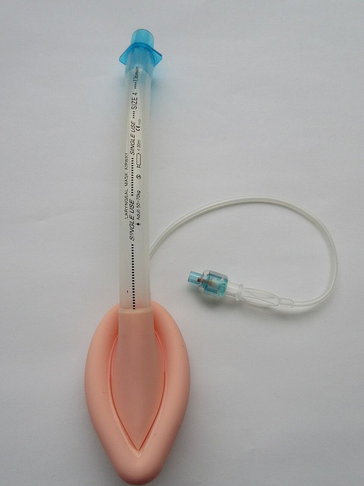

후두마스크기도유지기 (Laryngeal Mask Airway)
검수 완료

| # | 원문 | 한국어 |
|---|---|---|
| 1 | LARYNGEAL MASK AIRWAY | 후두마스크 기도기 |
| 2 | SINGLE USE | 일회용 |
| 3 | Adult 50–70kg | 성인 50~70 kg용 |
| 4 | SIZE 4 | 4호 |
쉽게 풀면
목구멍 안쪽 성대 바로 위에 넣어서 공기가 폐로 잘 들어가도록 도와주는 기구이다. 기관삽관보다 넣기 쉽다.
왜 중요한가
후두 입구를 마스크로 덮어 환기하는 성문상 기도기의 원형으로, 병원 전 심정지에서 기관삽관 및 백밸브마스크와 비교한 대규모 무작위 시험이 기도 관리 지침을 바꾸었다. 삽입 성공률과 소요 시간이 술기 난이도가 낮은 대안으로서의 위치를 뒷받침한다.
핵심 정리
후두마스크 기도기(LMA)는 기도관과 커프가 달린 타원형 마스크로 이루어진 기구다. 입으로 넣어 성문 위에 놓고 끝이 상부 식도 괄약근에 닿게 하며, 커프가 밀봉한다. 기관 튜브가 성문을 통과하는 것과 다르다. 소독하여 재사용할 수 있다.
영국의 마취과 의사 아치 브레인이 1980년대 초에 개발했다. 성문에서 끝과 끝을 직접 잇는 연결이 가장 좋은 기도 연결이라고 보았다. 1982년 런던병원에서의 첫 연구에서 대부분 환자에게 삽입과 환기가 성공했고, 상용 LMA 클래식은 1987년 12월 영국에서 처음 공급되었다.
예시로 보기
마취 중이거나 의식이 없는 환자의 기도를 열어 두고 산소나 흡입마취제를 폐로 보내는 데 쓴다. 근이완제나 후두경 없이도 넣을 수 있고 치아와 후두 손상 가능성이 기관삽관보다 낮다. 안면마스크와 백밸브마스크 환기에서 위 팽창을 막는 대안도 된다. LMA는 가장 흔히 쓰이는 성문상 기구다.
자주 하는 오해
- 기관 튜브보다 흡인 보호가 약하다. 흡인 위험이 큰 경우, 특히 2시간 넘는 수술에서는 대개 피하고, 비만이 심하거나 기도 수술·복강경 수술에서는 기관삽관이 대개 선호된다.
- 폐 유순도가 낮은 환자와 입·인두 수술에도 대개 쓰지 않는다. 의식이 있는 환자에게는 구역 반사를 일으킬 수 있어 쓰지 않는다.
- 기관삽관보다 해부학적 사강이 커서 산소화와 이산화탄소 제거가 떨어지고 기도 저항이 약간 늘 수 있다.
- 가장 심각한 위험은 기구가 놓인 동안의 구토와 그로 인한 흡인이다. 위치가 맞는지는 영상으로 확인할 수 있다.
논문에서는 이렇게 쓰입니다
예시 문장
아래 예문은 용어의 쓰임을 보이려고 만든 것으로, 실제 논문 문장이 아니다.
기관내삽관에 비해 삽입 실패율과 시술 중 가슴압박 중단 시간이 적어, 심정지 현장에서 신속한 기도확보 수단으로 선호도가 높아지고 있다.
이 문장은 응급 현장에서 두 기도확보 방법 중 어느 쪽이 더 빠르고 확실하게 성공하는지를 실제 환자 자료로 비교했다는 뜻이다. 즉 현장 지침을 정하는 데 근거가 되는 연구이다.
조금 더 깊게 보면
기관삽관의 대체물로 여겨지지만 기관을 밀봉하지 않아 흡인 방어와 고압 환기에 한계가 있고, 심폐소생술 중 압박에 의해 위치가 흔들릴 수 있다는 점이 다르다. 여러 세대의 제품이 있어 위 감압 통로 유무 등 설계가 다르므로, 연구에서 비교된 기구가 어떤 것인지 확인해야 결과를 일반화할 수 있다. 커프 압력을 지침에 맞게 조절하지 않으면 밀폐가 불완전해 환기가 새거나 반대로 점막 손상을 일으킬 수 있어, 정기적인 커프압 확인이 권장된다. 삽입 후 흉부 상승과 청진 소견으로 위치를 확인하는 것이 원칙이며, 위치가 어긋난 경우 환기 저항이 커지거나 공기 누출음이 들려 재삽입이 필요할 수 있다.
주의할 점
위 내용물 역류 시 완전한 기도 보호가 되지 않아 흡인 위험이 있으므로 지속적인 관찰이 필요하다.
위 감압 통로가 없는 구형 제품은 위 팽창과 역류 위험이 더 크므로 제품 세대에 따라 관리 방법을 달리해야 한다. 인두 구조가 비정상적인 환자나 입을 충분히 벌릴 수 없는 환자에서는 삽입 자체가 제한될 수 있다. 삽입 각도가 잘못되면 후두덮개가 접혀 들어가 기도를 오히려 막는 합병증이 보고된 바 있다.
참고 문헌
- Wikipedia contributors. (n.d.). Laryngeal mask airway. Wikipedia.
- Wikipedia contributors. (n.d.). Airway management. Wikipedia.